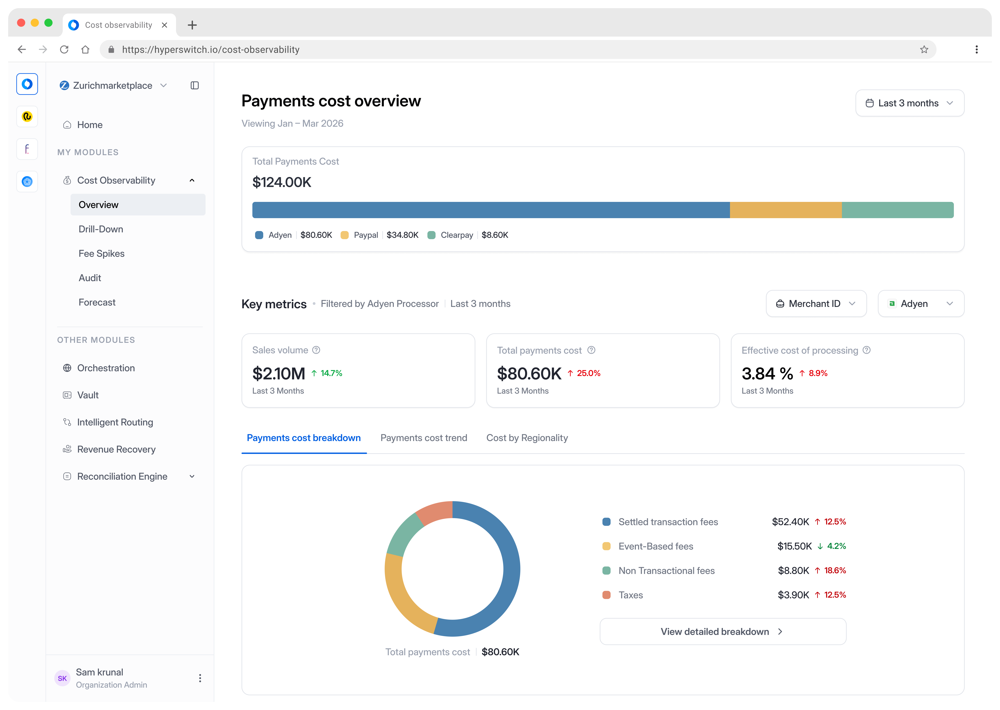
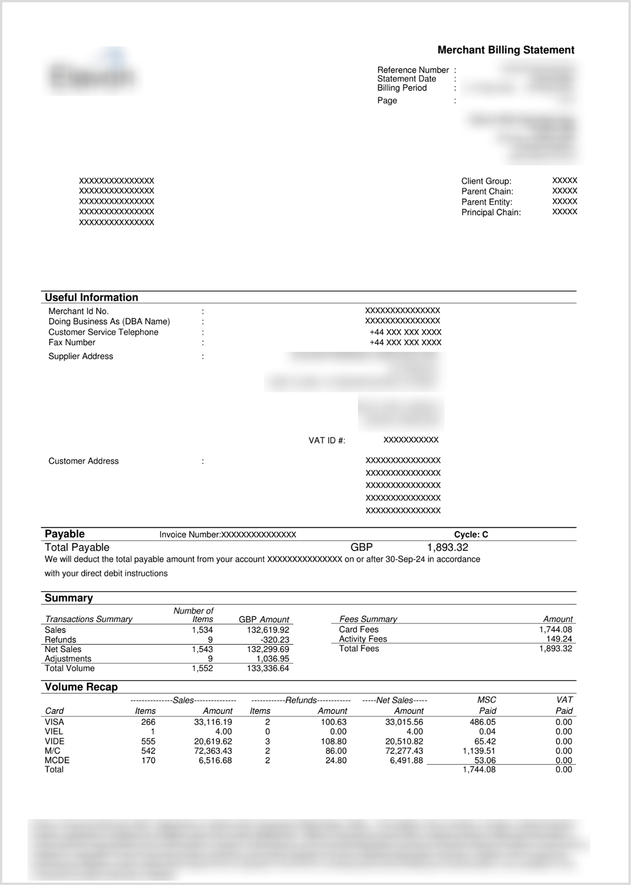
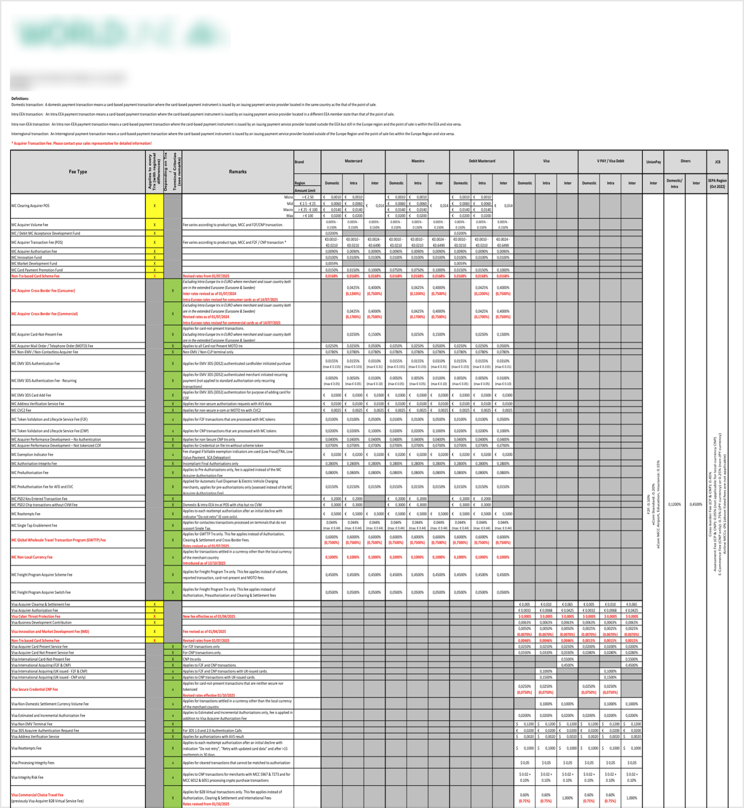
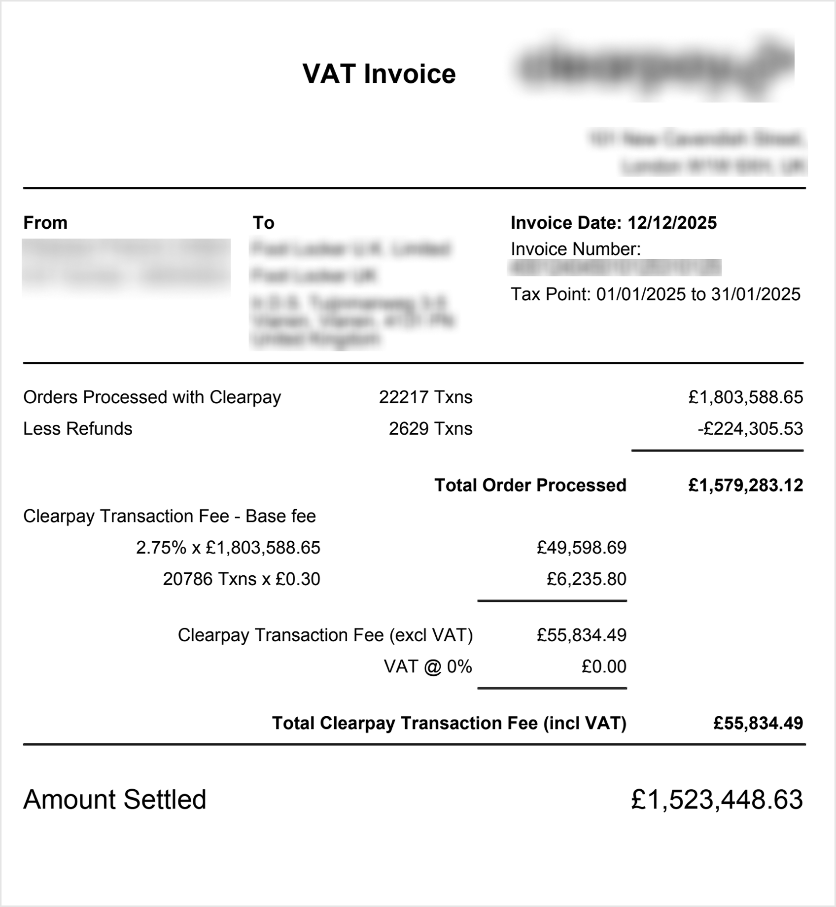

I designed HyperSense from 0 to 1 as the only designer on the team: a product that shows enterprise merchants where their payment costs go, and why.
When Juspay took its payment infrastructure to US and European merchants through Hyperswitch, we met a market where payment costs weren't a hidden operational detail but a critical business concern, and one merchants found very hard to make sense of.
On the surface, payments appear simple. A customer pays, and the merchant gets paid.
In reality, every transaction passes through multiple participants before reaching the merchant, each introducing its own fees and rules. Individually these costs seem small, but at enterprise scale they become one of a merchant's largest variable expenses.
Merchants knew how much they were paying, but had very little understanding of what changed, why it changed, or where their money was going.
Payment costs look small, typically 1.5-3.5% of payment volume, but at enterprise scale they quickly translate into millions of dollars in avoidable spend.
Costs are rarely a priority.
$5M/yr volume → $100K/yr fees
Costs become noticeable.
$50M/yr volume → $1M/yr fees
Every basis point matters.
$500M/yr volume → $10M/yr fees
HyperSense is a payment cost observability platform built to help merchants understand where their payment costs come from, why they change, and what actions to take next.
It transforms fragmented payment data spread across processor invoices, settlement reports, and transaction logs into a single investigation experience.

Every card payment carries a cost, and how it's calculated depends on the merchant's pricing model: Blended or IC++.
Blended applies one fixed rate to every transaction: simple and predictable, but expensive at high volume. IC++ charges the actual cost of each transaction, which creates room to save at scale. That's why enterprise merchants prefer it.
In IC++ pricing, no two transactions are guaranteed to be priced the same. Card type, authentication, settlement timing, geography, and data quality all influence the final fee. Each variable can quietly shift a transaction into a different fee tier, and most merchants never see it happen.
Without visibility, enterprise merchants often pay more than they should. The gap between expected and actual payment costs can reach 7-10%.
Understanding the complete cost story often means piecing together fragmented payment cost data spread across invoices, settlement reports, and network documentation.



Once we understood the problem, we needed to understand who was responsible for solving it. We discovered that payment costs weren't owned by a single team. Three different stakeholders interacted with the same problem from different angles, each carrying a different responsibility, but all missing the same visibility.
Every month, processor invoices arrive with hundreds of fee line items that need to be reconciled, explained, and defended before the billing cycle closes.
Payment costs are one of the largest variable expenses in the business, often representing 1.5-2.2% of revenue. When those numbers move, finance teams are expected to explain why and predict what happens next.
Routing rules, authentication settings, and processor configurations all influence payment costs. But their impact often appears weeks later, long after the decision was made.
By this point, we understood the ecosystem. The challenge was turning a fragmented payment system into a coherent cost story that different teams could trust and act on. While each team entered from a different perspective and carried different responsibilities, they were ultimately trying to answer the same question: where payment costs were coming from and what to do about them.
Payment cost systems are naturally fragmented. Organising the product around processors, fee types, or reports would simply mirror that complexity.
Instead, we looked at how investigations actually unfolded. Regardless of where teams started, they were all trying to answer the same core questions.
That insight shaped the product strategy.
I designed the product around how teams investigate costs. Rather than asking teams to manually piece together fragmented reports, each module guided them toward the answers they needed: from understanding what changed to deciding what to do next. Together, they form a coherent cost story that teams could trust and act on.
Defining the investigation flow solved the product problem. Designing an experience around it introduced a new set of constraints.
Every decision now had to balance trust, flexibility, and depth, without breaking the investigation flow.
Cost investigations required teams to piece together answers from multiple disconnected systems, reports, and invoices before they could understand what was happening.
Consolidate fragmented cost data into a single workflow that supports end-to-end investigation.
Resolved in OverviewPayment teams were expected to make operational and financial decisions from data they couldn't easily verify or explain.
Present cost intelligence in a way that feels transparent, explainable, and trustworthy enough to drive decisions.
Resolved in AuditThe same product needed to serve merchants operating on fundamentally different pricing structures and levels of cost visibility.
Create a unified experience that adapts to both transparent IC++ pricing and simplified blended pricing.
Resolved in OverviewNot every increase in payment costs is a problem. Some reflect healthy business growth, while others indicate preventable leakage.
Help teams distinguish normal cost behaviour from issues that require investigation and action.
Resolved in Fee SpikesFinance, Payments, and Operations teams approached the problem from different angles, but every investigation needed a shared understanding of what changed and why.
Support different workflows while keeping every team aligned around the same cost narrative.
Resolved in Drill-DownWith the investigation flow established, the next challenge was turning it into a cohesive product experience.
Each module served a distinct purpose, but together they needed to feel like a single investigation that teams could navigate naturally every month.
Before teams investigate anomalies or optimize costs, they first need to understand where they stand today.
I designed Overview as the system's source of truth: a unified cost layer that consolidates fragmented signals into a single cost story.
The same experience needed to work across very different merchant realities, from single processors to multi-PSP setups, and from simplified blended pricing to fully transparent IC++ models.
Before any investigation begins, teams need answers to three questions:
A single number rarely explains why costs change. Teams needed the ability to break costs down across processors, regions, corridors, fee types, and currencies.
Drill-Down became the investigation layer of the product, helping teams move from cost summaries to the underlying drivers behind them.
I designed Drill-Down to answer three questions:
Not every increase in payment cost is a problem. The same spike could be driven by healthy sales growth, expansion into new markets, operational issues, or preventable leakage.
Fee Spikes was designed as an early warning layer that surfaces meaningful cost changes and explains what is driving them.
Every spike ultimately comes down to three questions:
Processor invoices show what was charged, but rarely explain whether those charges were accurate.
CPS Retail$4,892
EIRF$2,147
The challenge was bringing together multiple layers of information (contracted rates, applied rates, fee variances, and transaction-level evidence) into a single verification flow.
Every audit ultimately comes down to three questions:
Instead of forcing teams to manually reconcile invoices, contracts, and transaction exports, the experience progressively moved from summary-level variances down to transaction-level evidence, making every discrepancy traceable and easy to defend.
Card networks like Visa and Mastercard regularly introduce new fees, revise existing programs, and update qualification rules. Although these changes are published weeks in advance, they are often buried inside dense technical documentation.
For merchants, the challenge wasn't access to information. It was understanding which updates would actually affect their business and what their financial impact would be. Without that visibility, teams often discovered the impact only after it appeared on the following month's invoice.
I designed Forecast to translate network updates into merchant-specific insights by modelling upcoming changes against each merchant's transaction behaviour.
It helps teams answer three questions:
With Forecast, the investigation no longer ended with understanding what happened. Teams could start preparing for what happens next.
HyperSense evolved from an internal concept into a product validated by enterprise merchants.
Through demos, pilots, and customer conversations, we confirmed that payment cost visibility wasn't just an operational problem; it was a business-critical one worth solving.
Presented to 20+ enterprise merchants, including Apple and SpaceX.
Piloted with 6 merchants using real payment cost data.
Two pilot merchants moved into commercial engagements.
While HyperSense began as a merchant-facing observability product, the investigation uncovered a larger opportunity upstream.
Many of the cost decisions that merchants struggle to understand originate within banks, processors, and network programs.
We're now applying the same principles of cost visibility and intelligence to financial institutions, helping them understand and manage payment costs.
Thanks for reading. If you're working on something this complex, I'd love to talk.